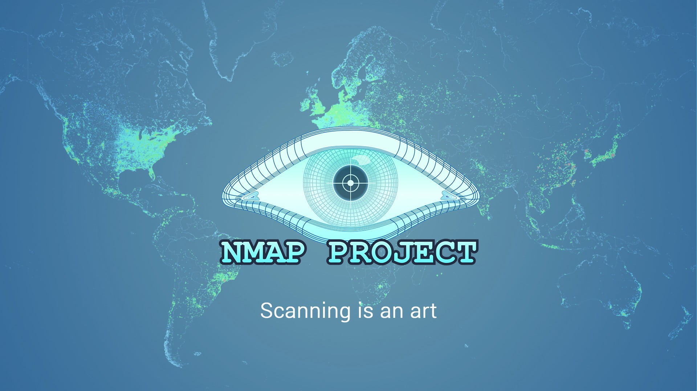
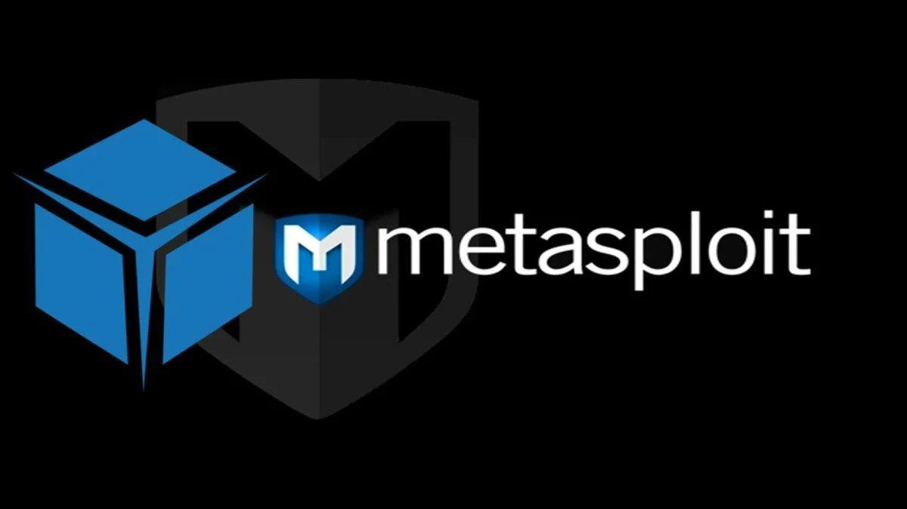
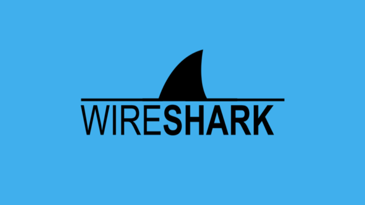

Aircrack: Descubre el mundo de la seguridad inalámbrica
Aircrack es una poderosa herramienta de seguridad informática diseñada para evaluar y fortalecer la protección de redes inalámbricas. Con un enfoque en la seguridad WiFi, Aircrack se ha convertido en una herramienta popular entre profesionales de la seguridad y entusiastas de la informática. En este stand, exploraremos de manera sencilla qué es Aircrack y cómo puede ayudarte a entender y mejorar la seguridad de tus redes WiFi.
Nmap: Descubriendo la red
Nmap es una poderosa herramienta de código abierto utilizada para el escaneo de redes y el mapeo de puertos. Desde su lanzamiento en 1997, Nmap se ha convertido en una herramienta imprescindible para administradores de redes, expertos en seguridad y entusiastas de la informática. En este stand, te llevaremos a través de una emocionante introducción a Nmap y cómo puedes utilizarlo para descubrir y evaluar los activos de tu red.
Metasploit: Descubre el arte de la seguridad ofensiva
Metasploit es una herramienta de seguridad informática de código abierto que se utiliza para probar y evaluar la seguridad de sistemas informáticos mediante pruebas de penetración. Desde su lanzamiento, Metasploit se ha convertido en una de las herramientas más populares para profesionales de la seguridad y hackers éticos. En este stand, te presentaremos de manera sencilla qué es Metasploit y cómo puede ayudarte a fortalecer la seguridad de tus sistemas.
Wireshark: Descifrando los secretos de las redes
Wireshark es una herramienta de análisis de protocolos de red de código abierto que permite capturar y examinar el tráfico de paquetes en una red. Desde su aparición, Wireshark se ha convertido en una herramienta esencial para administradores de redes y profesionales de seguridad informática. En este stand, exploraremos de manera sencilla qué es Wireshark y cómo puede ayudarnos a comprender el comportamiento de nuestras redes y resolver problemas relacionados con ellas.